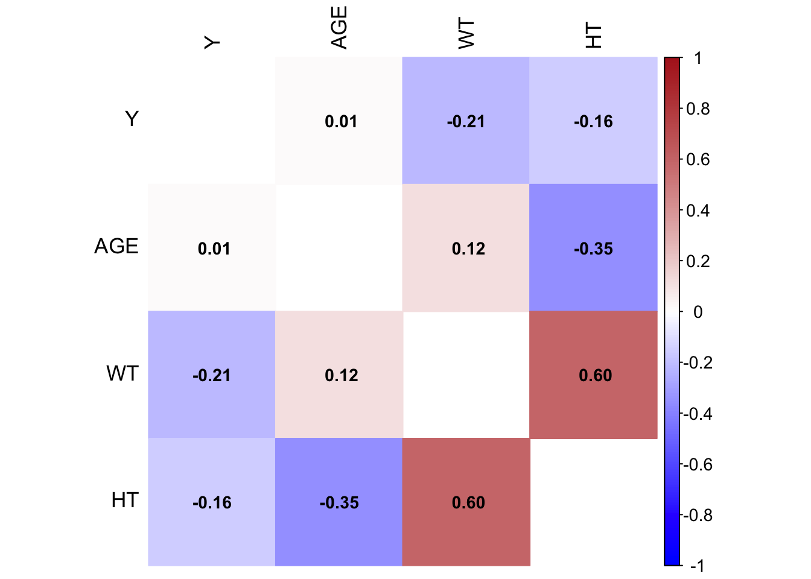
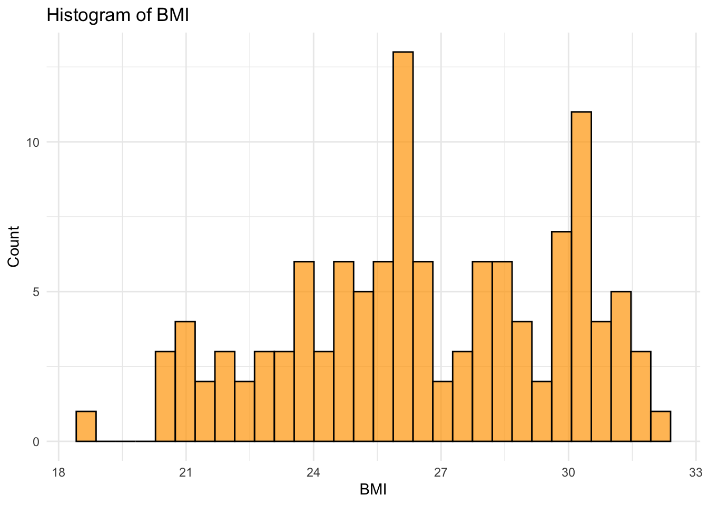
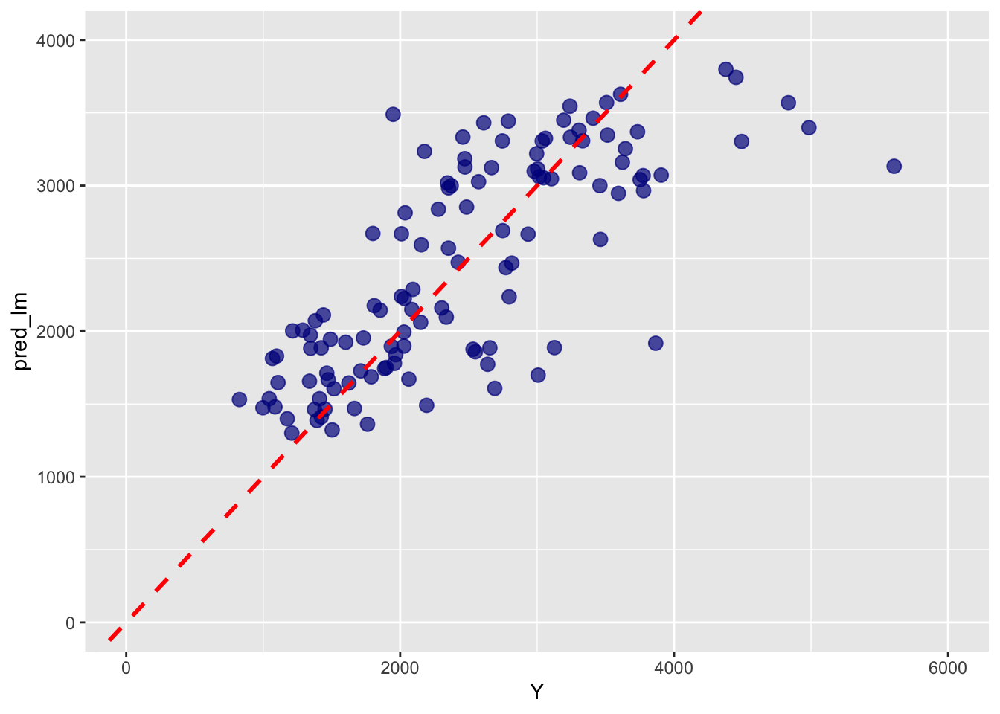
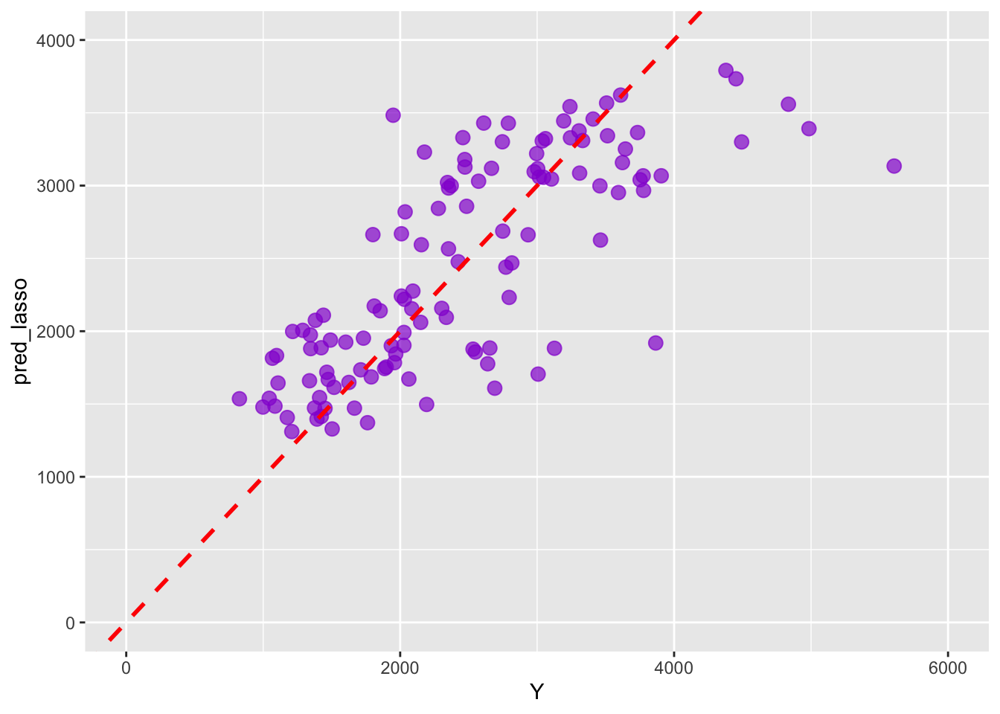
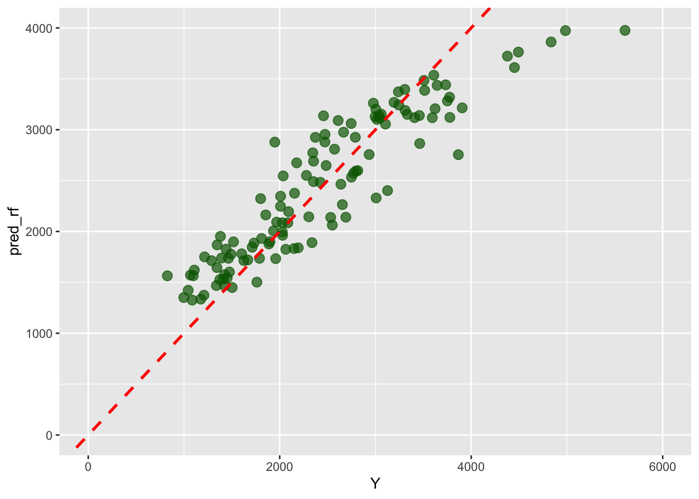
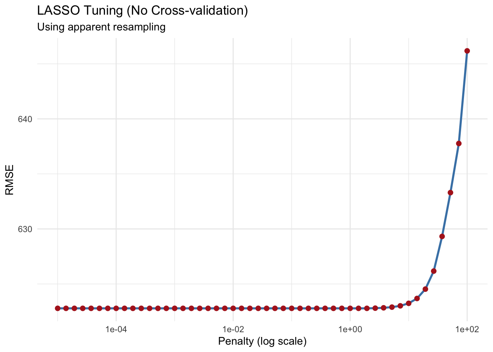
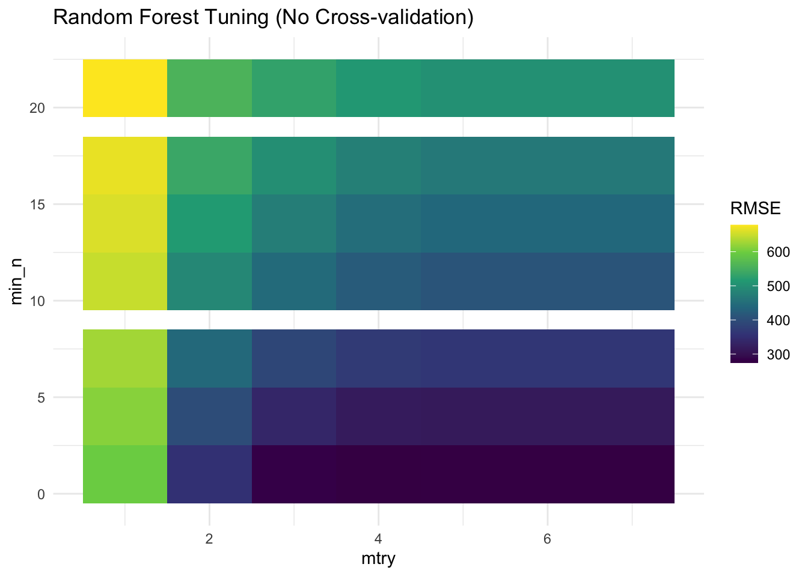
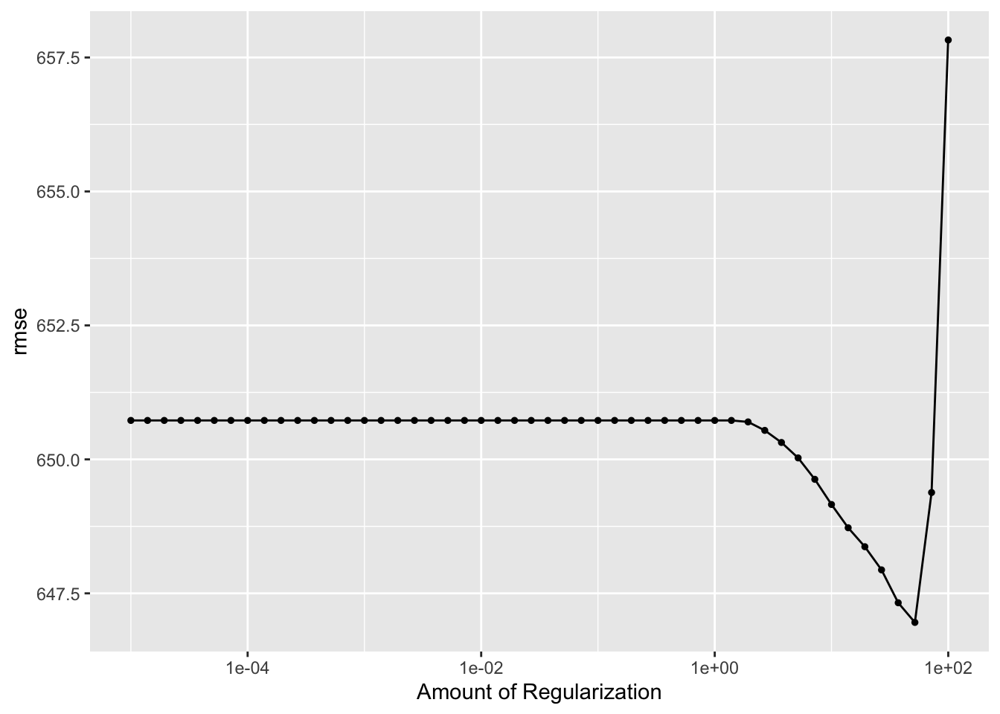

The following object is masked from 'package:yardstick':
spec
The following object is masked from 'package:scales':
col_factor
Set random seed for reproducibility
# Setting seed for reproducibilityrdmseed <-1234set.seed(rdmseed)
Loading dataset
# load data ml_df <-read_csv(here::here("ml-models-exercise/data/df_cleaned.csv"))
Rows: 120 Columns: 7
── Column specification ────────────────────────────────────────────────────────
Delimiter: ","
dbl (7): Y, DOSE, AGE, SEX, RACE, WT, HT
ℹ Use `spec()` to retrieve the full column specification for this data.
ℹ Specify the column types or set `show_col_types = FALSE` to quiet this message.
# Convert categorical variables to numeric so they're usable in modelsml_df$SEX <-as.numeric(ml_df$SEX)ml_df$RACE <-as.numeric(ml_df$RACE)# combine categories 7 and 88 of the race variableml_df$race_clean <-case_when( ml_df$RACE %in%c(7, 88) ~3,TRUE~as.numeric(ml_df$RACE))
EDA - Correlation
# Generate correlation matrix to understand relationships between numeric predictorscor_matrix <-cor(ml_df %>%select(Y, AGE, WT, HT))# Make the correlation plotcorrplot::corrplot( cor_matrix, method ='color', # Use colored heatmap instead of plain numberscol =colorRampPalette(c("blue", "white", "firebrick"))(200),addCoef.col ="black", tl.col ="black", tl.cex =1.1, number.cex =0.9, cl.cex =0.9, cl.lim =c(-1, 1), diag =FALSE)
Warning in text.default(pos.xlabel[, 1], pos.xlabel[, 2], newcolnames, srt =
tl.srt, : "cl.lim" is not a graphical parameter
Warning in text.default(pos.ylabel[, 1], pos.ylabel[, 2], newrownames, col =
tl.col, : "cl.lim" is not a graphical parameter
Warning in title(title, ...): "cl.lim" is not a graphical parameter

Feature engineering
# Creating a new variable: Body Mass Index (BMI)ml_df$BMI <- ml_df$WT / (ml_df$HT)^2# Checking a summary of the BMI valuessummary(ml_df$BMI)
Min. 1st Qu. Median Mean 3rd Qu. Max.
18.69 24.54 26.38 26.63 29.70 32.21
#Histogram to visualize distribution of BMIggplot(ml_df, aes(x = BMI)) +geom_histogram(fill ="orange", color ="black", bins =30, alpha =0.7) +labs(title ="Histogram of BMI",x ="BMI",y ="Count" ) +theme_minimal()

Model building
# Reset seed before modelingset.seed(rdmseed)
Linear model
# Fit a standard linear regression model using all predictorslm_model <-linear_reg() %>%fit(Y ~ DOSE + AGE + SEX + race_clean + BMI, data = ml_df)# Get predictions from linear model and calculate RMSEml_df$pred_lm <-predict(lm_model, new_data = ml_df)$.predrmse(ml_df, truth = Y, estimate = pred_lm)
# A tibble: 1 × 3
.metric .estimator .estimate
<chr> <chr> <dbl>
1 rmse standard 623.
# # Plot observed vs. predicted for Linear Modelggplot(ml_df, aes(x = Y, y = pred_lm)) +geom_point(color ="darkblue", alpha =0.7, size =3) +geom_abline(slope =1, intercept =0, linetype ="dashed", color ="red", size =1) +scale_x_continuous(limits =c(0, 6000)) +scale_y_continuous(limits =c(0, 4000))
Warning: Using `size` aesthetic for lines was deprecated in ggplot2 3.4.0.
ℹ Please use `linewidth` instead.

LASSO
set.seed(rdmseed)# Prepare recipe for LASSO with normalizationrec <-recipe(Y ~ DOSE + AGE + SEX + race_clean + BMI, data = ml_df) %>%step_normalize(all_numeric(), -all_outcomes())# Define LASSO model with a fixed penaltylasso_spec <-linear_reg(penalty =0.1, mixture =1) %>%set_engine("glmnet")# Create a workflow and fit the LASSO modelwf <-workflow() %>%add_recipe(rec) %>%add_model(lasso_spec)lasso_fit <-fit(wf, data = ml_df)ml_df$pred_lasso <-predict(lasso_fit, new_data = ml_df)$.predrmse(ml_df, truth = Y, estimate = pred_lasso)
# A tibble: 1 × 3
.metric .estimator .estimate
<chr> <chr> <dbl>
1 rmse standard 623.
# Plot observed vs. predicted for LASSO Modelggplot(ml_df, aes(x = Y, y = pred_lasso)) +geom_point(color ="darkviolet", alpha =0.7, size =3) +geom_abline(slope =1, intercept =0, linetype ="dashed", color ="red", size =1) +scale_x_continuous(limits =c(0, 6000)) +scale_y_continuous(limits =c(0, 4000))

Random Forest
set.seed(rdmseed)# Create a workflow and fit the LASSO modelrf_model <-rand_forest() %>%set_mode("regression") %>%set_engine("ranger", seed = rdmseed)rf_fit <- rf_model %>%fit(Y ~ DOSE + AGE + SEX + race_clean + BMI, data = ml_df)# Get predictions and evaluate model performanceml_df$pred_rf <-predict(rf_fit, ml_df)$.predrmse(ml_df, truth = Y, estimate = pred_rf)
# A tibble: 1 × 3
.metric .estimator .estimate
<chr> <chr> <dbl>
1 rmse standard 414.
# Plot observed vs. predicted for RF Modelggplot(ml_df, aes(x = Y, y = pred_rf)) +geom_point(color ="darkgreen", alpha =0.7, size =3) +geom_abline(slope =1, intercept =0, linetype ="dashed", color ="red", size =1) +scale_x_continuous(limits =c(0, 6000)) +scale_y_continuous(limits =c(0, 4000))

Tuning the LASSO model (without cross-validation)
set.seed(rdmseed)# Create a grid of penalty values for LASSOlasso_grid <-tibble(penalty =10^seq(-5, 2, length.out =50))# Define LASSO model with tunable penaltylasso_spec_tune <-linear_reg(penalty =tune()) %>%set_engine("glmnet")# Create workflow and assign to lasso_tuning_workflow (new name)lasso_tuning_workflow <-workflow() %>%add_model(lasso_spec_tune) %>%add_recipe(rec)# Perform grid search without CV (apparent resampling)lasso_tune <-tune_grid( lasso_tuning_workflow,resamples =apparent(ml_df),grid = lasso_grid,metrics =metric_set(rmse))# Extract tuning resultslasso_tune_df <-as.data.frame(lasso_tune$.metrics)# Plot LASSO tuning resultsggplot(lasso_tune_df, aes(x = penalty, y = .estimate)) +geom_line(size =1, color ="steelblue") +geom_point(size =2, color ="firebrick") +scale_x_log10() +labs(x ="Penalty (log scale)",y ="RMSE",title ="LASSO Tuning (No Cross-validation)",subtitle ="Using apparent resampling" ) +theme_minimal()

Tuning for our Random Forest model (without cross-validation)
# Create tuning grid for mtry and min_nrf_grid <-grid_regular(mtry(range =c(1, 7)),min_n(range =c(1, 21)),levels =7)# Define random forest model with tunable parametersrf_spec_tune <-rand_forest(mtry =tune(),min_n =tune(),trees =300) %>%set_mode("regression") %>%set_engine("ranger", seed = rdmseed)# Build workflowrf_wf_tune <-workflow() %>%add_model(rf_spec_tune) %>%add_recipe(rec)# Perform RF tuning without CVrf_tune <-tune_grid( rf_wf_tune,resamples =apparent(ml_df),grid = rf_grid,metrics =metric_set(rmse))
→ A | warning: ! 6 columns were requested but there were 5 predictors in the data.
ℹ 5 predictors will be used.
There were issues with some computations A: x1
→ B | warning: ! 7 columns were requested but there were 5 predictors in the data.
ℹ 5 predictors will be used.
There were issues with some computations A: x1
There were issues with some computations A: x5 B: x4
There were issues with some computations A: x7 B: x7
rf_tune_df <-as.data.frame(rf_tune$.metrics)# Plot RF tuning resultsggplot(rf_tune_df, aes(x = mtry, y = min_n, fill = .estimate)) +geom_tile() +scale_fill_viridis_c() +labs(title ="Random Forest Tuning (No Cross-validation)",x ="mtry",y ="min_n",fill ="RMSE" ) +theme_minimal()

Cross-validation for our LASSO model tuning
set.seed(rdmseed)# Create 5-fold CV with 5 repeatscv_folds <-vfold_cv(ml_df, v =5, repeats =5)# Tune LASSO using CVlasso_tune_cv <-tune_grid( lasso_tuning_workflow,resamples = cv_folds,grid = lasso_grid,metrics =metric_set(rmse))autoplot(lasso_tune_cv)

Cross-validation tuning for our random forest model